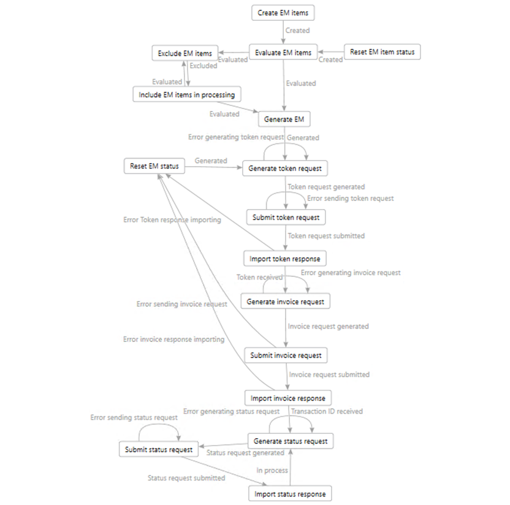
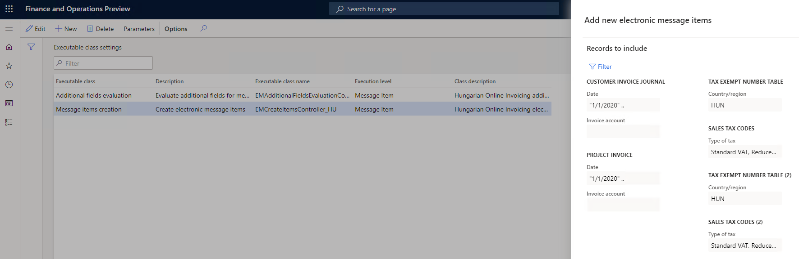
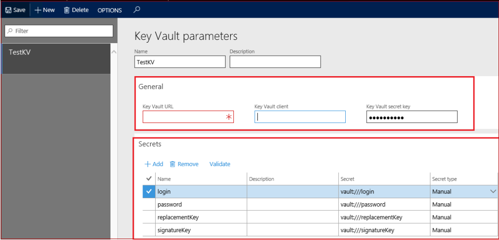
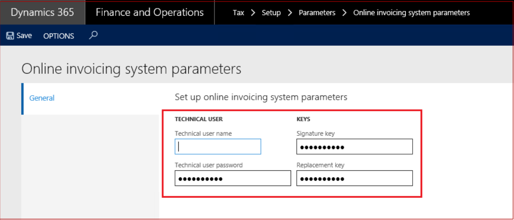
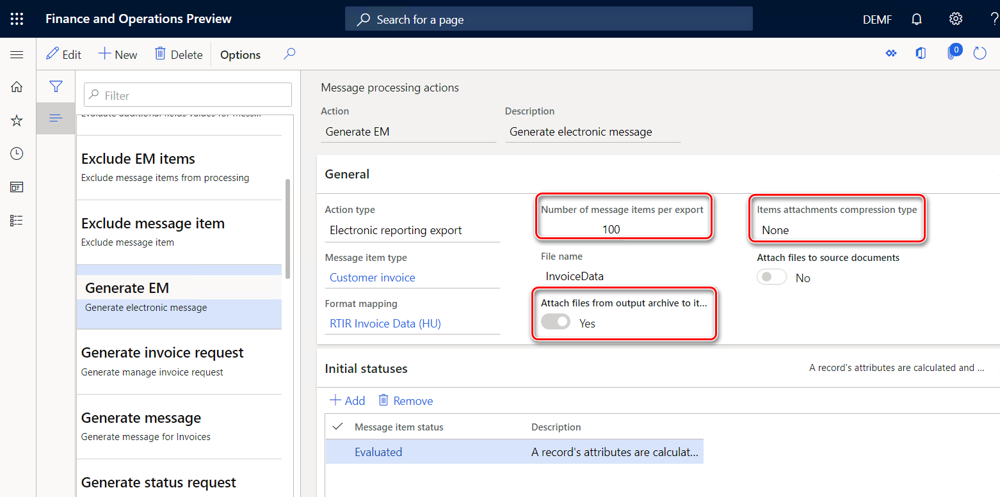

Online invoicing system
The National Tax and Customs Administration of Hungary has announced that, starting July 1, 2018, companies in Hungary are required to supply data of their issued invoices to the Real-time invoice reporting (RTIR) platform of the Online invoicing system.
For more information, see https://onlineszamla.nav.gov.hu.
This topic describes how to set up Electronic reporting (ER) configurations, and how to set up and use electronic messaging (EM) functionality for RTIR.
The topic includes information about how to complete the following tasks:
- Import ER configurations, and set up application-specific parameters.
- Set up EM functionality.
- Work with EM functionality for RTIR.
Import ER configurations
To prepare your Microsoft Dynamics 365 Finance application for RTIR, you must import the following ER configurations.
| Number | Configuration name | Configuration type | Description |
|---|---|---|---|
| 1 | Invoices Communication Model | Model | The model that represents data for reporting incoming and outgoing invoices. |
| 2 | RTIR mapping | Model mapping (export) | The model mapping configuration that collects data from Finance in accordance with Hungarian RTIR requirements. |
| 3 | RTIR Invoice Data (HU) | Format XML (export) | The format for exporting RTIR invoice data. |
| 4 | RTIR Token Exchange Request (HU) | Format XML (export) | The format for exporting RTIR token exchange requests. |
| 5 | RTIR Manage Invoice Request (HU) | Format XML (export) | The format for exporting RTIR manage invoice requests. |
| 6 | RTIR Query Invoice Status Request (HU) | Format XML (export) | The format for exporting RTIR query invoice status requests. |
| 7 | Electronic Messages framework model | Model | The model for the EM framework. |
| 8 | RTIR import model mapping | Model mapping (import) | The importing model mapping configuration that provides updates of EM data during RTIR. |
| 9 | RTIR import format (HU) | Format XML (import) | The importing format configuration that parses responses from RTIR in the data structure of the EM framework. |
Important
Be sure to import the most recent versions of these configurations. The version description usually includes the number of the Microsoft Knowledge Base (KB) article that explains the changes that were introduced in the configuration version.
Note
After all the ER configurations from the preceding table are imported, set the Default for model mapping option to Yes for the RTIR mapping and RTIR import model mapping configurations.
For more information about how to download ER configurations from Microsoft Dynamics Lifecycle Services (LCS), see Download Electronic reporting configurations from Lifecycle Services.
Set up application-specific parameters
The format that is used to report invoice data to the Hungarian Online Invoicing System requires specific values from enumerated lists for some elements (for example, units of measure or line expression indicators). For these elements, before you start to use RTIR, you must set up application-specific parameters that the RTIR Invoice Data (HU) format will use.
Line expression indicator
The lineExpressionIndicator element of the Boolean type must be reported to the Online invoicing system for invoice lines. For natural units of measure, a value of true must be reported for the lineExpressionIndicator element. If the unit of measure isn't indicated for an invoice line, a value of false must be reported for the lineExpressionIndicator element.
In the Electronic reporting workspace, select the most recent imported version of the RTIR Invoice Data (HU) format.
On the Action Pane, on the Configurations tab, in the Application specific parameters group, select Setup.
On the Lookups FastTab, select UnitOfMeasureTypeLookup for the most recent version of the format, and then define which units of measure must be reported as natural (that is, a value of true must be reported for the lineExpressionIndicator element in the Online invoicing system).
Match all the units in your Legal entity. For example, for kilometers, add the following line:
- Lookup result: Natural
- Line: 1
- Unit of measure code: km This value is the value from the Units page for your legal entity (Organization administration > Setup > Units).
Important
At the end of the list, add the following two lines.
| Lookup result | Line | Unit of measure |
|---|---|---|
| NONE | This line must be next to last in the list | *Blank* |
| Other | This line must be last in the list. | *Not blank* |
The lineDescription element must be reported when the lineExpressionIndicator element is reported. If there is no value for the lineDescription element on the related line of the invoice, this element will indicate the voucher of the related invoice. We recommend that you define the description on all invoices lines of all types, except invoices that are posted from a sales order. In that case, the lineDescription element will report the item.
Unit of measure
For the unitOfMeasure element, one of the values from the enumerated list that is defined by the XSD schema of the Invoice Data format must be reported.
In the Electronic reporting workspace, select the most recent imported version of the RTIR Invoice Data (HU) format.
On the Action Pane, on the Configurations tab, in the Application specific parameters group, select Setup.
On the Lookups FastTab, select UnitOfMeasureLookup for the most recent version of the format, and then define the correspondence between the reference units of measure and the enumerated list of the Online invoicing system. For example, for kilometers, add the following line:
- Lookup result: KILOMETER
- Line: 1
- Unit of measure code: km (This value is the value from the Units page for your legal entity.)
Match all the units in your legal entity that you can find a related value for in the enumerated list.
| UnitOfMeasureType | Description (hu) | Description (en-us) |
|---|---|---|
| PIECE | Darab | Piece |
| KILOGRAM | Kilogramm | Kilogram |
| TON | Metrikus tonna | Metric ton |
| KWH | Kilowatt óra | Kilowatt hour |
| DAY | Nap | Day |
| HOUR | Óra | Hour |
| MINUTE | Perc | Minute |
| MONTH | Hónap | Month |
| LITER | Liter | Liter |
| KILOMETER | Kilométer | Kilometer |
| CUBIC_METER | Köbméter | Cubic meter |
| METER | Méter | Meter |
| LINEAR_METER | Folyóméter | Linear meter |
| CARTON | Karton | Carton |
| PACK | Csomag | Pack |
| OWN | Saját mennyiségi egység megnevezés | Own unit of measure |
Important
Instead of adding all the own values to the list you can define *Not blank* for the OWN lookup result. All the other values will then be reported as OWN. The OWN lookup result must be added, and it must be last in the list.
The unitOfMeasureOwn element must report information about any unit of measure that there is no value for in the enumerated list of the unitOfMeasure element. This element must be reported when the unitOfMeasure element has a value of OWN.
You can export the setup of application-specific parameters from one version of the report and import it into another version. You can also export the setup from one report and import it into another report, provided that both reports have the same structure of lookup fields.
When you've finished setting up conditions, change the value of the State field to Completed, save your changes, and close the page.
Import a package of data entities that includes a predefined EM setup
EM functionality is provided to maintain different electronic reporting processes for different document types. For more information about electronic messages, see Electronic messaging.
The process of setting up the EM functionality for RTIR has many steps. Because the names of some predefined entities are used in the ER configurations, it's important that you use a set of predefined values that are delivered in a package of data entities for the related tables.
In LCS, go to the Shared asset library, and select the Data package asset type.
In the list of data package files, find HU RTIR setup.zip, and download it to your computer. There might be several versions of the package. Be sure to download the most recent version.
After the HU RTIR setup.zip file is downloaded, open Finance, select the company that you will interoperate with the Hungarian Online invoicing system from, and then go to Workspaces > Data management.
In the Data management workspace, go to Framework parameters > Entity settings, and then select Refresh entity list. Wait for confirmation that the refresh has been completed. For more information about how to refresh the entity list, see Entity list refresh.
Validate that the source data and target data are correctly mapped. For more information, see the section about validation in Data import and export jobs.
Before the data entities are used for the first time to import the data from the package, sync the mapping of source data and target data. In the list for the package, select a data entity, and then, on the Action Pane, selectModify target mapping.
Above the grid for the package, select Generate mapping to create a mapping from scratch, and then save the mapping.
Repeat steps 6 through 7 for each data entity in the package before you start the import.
For more information about data management, see Data management.
You must now import data from the HU RTIR setup.zip file into the selected company. In the Data management workspace, select Import.
Select Upload and add, select the HU RTIR setup.zip file on your computer, and upload it.
After the data entities are uploaded, on the Action Pane, select Import.

You will receive a notification in Messages, or you can manually refresh the page to view the data import progress. When the import process is completed, the Execution summary page shows the results.
The HU RTIR setup.zip package provides the setup for Online invoicing processing in the EM functionality that supports interoperation with the Hungarian Online invoicing system. The following illustration shows the schema for Online invoicing processing.

The following table describes the processing actions of Online invoicing processing.
| Action | Type | Description |
|---|---|---|
| Create EM items | Message item execution level | This action runs the EMCreateItemsController_HU executable class to generate electronic message items for issued invoices that were posted. Additional setup of the EMCreateItemsController_HU executable class parameters is required. |
| Evaluate EM items | Message item execution level | This action runs the EMAdditionalFieldsEvaluationController_HU executable class to calculate additional field values for electronic message items. These values include the invoice operation, the reference to the original invoice, and the last line number. |
| Generate EM | Electronic reporting export | This action runs the RTIR Invoice Data (HU) format to create a package of invoices that can be submitted to the Online invoicing system. |
| Generate token request | Electronic reporting export message | This action runs the RTIR Token Exchange Request (HU) format to create the exchange token file in XML format. |
| Submit token request | Web service | This action submits the token file in XML format to the Token exchange web service. |
| Import token response | Electronic reporting import | This action imports the response from the Online invoicing system and stores the token that is received in the Message additional fields FastTab by using the RTIR import format (HU) configuration. |
| Generate invoice request | Electronic reporting export message | This action runs the RTIR Manage Invoice Request (HU) format to create the ManageInvoiceRequest.xml file by encoding invoices, inserting a token in the request, and so on. |
| Submit invoice request | Web service | This action submits the ManageInvoiceRequest.xml file to the Manage invoice web service. |
| Import invoice response | Electronic reporting import | This action imports the response from the Online invoicing system and stores the transaction ID that is received in the Message additional fields FastTab by using the RTIR import format (HU) configuration. |
| Generate status request | Electronic reporting export message | This action runs the RTIR Query Invoice Status Request (HU) format to create the QueryInvoiceStatusRequest.xml file. |
| Submit status request | Web service | This action submits the QueryInvoiceStatusRequest.xml file to the Query invoice status web service. |
| Import status response | Electronic reporting import | This action imports the response from the Online invoicing system. If the status of the EM item is Received (which indicates that the invoice was received by the Online invoicing system) or Processing (which indicates that the invoice is being processed in the Online invoicing system), the system will send the status request again, until the status of the EM item is updated to Processed. |
| Exclude EM items | User processing | This manual user action resets the status of the EM item from Evaluated to Excluded and excludes the item from processing. |
| Include EM items in processing | User processing | This manual user action resets the status of the EM item from Excluded or Manual editing to Evaluated. |
| Reset EM item status | User processing | This manual user action resets the status of the EM item from Rejected to Created. |
| Reset EM status | Message level user processing | This manual user action resets the status of the electronic message from Error invoice response importing, Error sending invoice request, or Error Token response importing to Generated so that processing for the electronic message can continue. |
For more information about the predefined setup that is included in the data entities in the package for RTIR, see Appendix 1: Electronic messages setup for RTIR later in this topic.
Set up EM for RTIR
After the data entities are imported into the database, follow these steps to make the EM functionality ready to use.
- Go to Tax > Setup > Electronic messages > Executable class settings, and select the Message items creation executable class that is associated with the EMCreateItemsController_HU executable class name.
- On the Action Pane, select Parameters.
- In the dialog box, on the Records to include FastTab, define values for the parameters of the query.

- Select OK.
- On the Executable class settings page, select the Additional fields evaluation executable class that is associated with the EMAdditionalFieldsEvaluationController_HU executable class name, select Parameters on the Action Pane, and then, in the dialog box, define values for the parameters of the executable class.

The following values must be set for the parameters.
| Parameter name | Value |
|---|---|
| Report period start date | The date when you want to start RTIR |
| Status for excluded items | Excluded |
| Status for items requiring manual editing | Manual editing |
| Operation field | Operation |
| Original message item field | Original message item |
| Last line reference number field | Last line reference number |
| Modification index | Modification index |
Select OK.
Interoperation with the Hungarian Online invoicing system requires a technical user name and password, and signature and replacement keys. There are two options for storing this sensitive data:
- Azure Key Vault storage
- Local storage
Go to System administration > Setup > System parameters, and set the Use advanced certificate store option to No to store sensitive data locally. Set the option to Yes to use Key Vault storage. For more information about how to set up Key Vault, see Setting up Azure Key Vault Client and Maintaining Azure Key Vault storage.
If you set the Use advanced certificate store option to Yes on the System parameters page, you must set up the Key Vault parameters at System administration > Setup > Key Vault parameters.

Go to Tax > Setup > Parameters > Online invoicing system parameters, and specify the following information:
- Technical user name
- Technical user password
- Signature key
- Replacement key
If you set the Use advanced certificate store option to Yes on the System parameters page, select related secrets on the General tab of the Online invoicing system parameters page.

Alternatively, if you set the Use advanced certificate store option to No, manually enter the technical user name and password, signature key, and replacement key that you obtained for interoperation with the Hungarian Online invoicing system. For more information, see the information about the registration procedure.

- Go to Tax > Setup > Parameters > Electronic messages > Web service settings, and enter the following information to define the internet address for web services.
| Web service name | Testing internet address |
|---|---|
| Manage invoices | https://api-test.onlineszamla.nav.gov.hu/invoiceService/v2/manageInvoice |
| Query invoice status | https://api-test.onlineszamla.nav.gov.hu/invoiceService/v2/queryTransactionStatus |
| Token exchange | https://api-test.onlineszamla.nav.gov.hu/invoiceService/v2/tokenExchange |
Internet addresses are subject to change by the Hungarian Online invoicing system. Therefore, we recommend that you check for actual internet addresses on the official web site of the Hungarian Online invoicing system. The website also has information about the actual production internet addresses that you should set up.
- Go to Tax > Setup > Parameters > Electronic messages > Message processing actions, and select Generate EM.
- In the Number of message items per export field, define the number of message items that can be included in one message. This number should not exceed 100.
- In the Items attached compression type field, specify None, and set the Attach files from output archive to items option to Yes.

- Go to Tax > Setup > Electronic messages > Electronic message processing, select Online invoicing processing, and then, on the Batch FastTab, select Create batch.
- Set up security roles for Online invoicing processing. Different groups of users might require access to Online invoicing processing. You can limit access to the processing, based on security groups that are defined in the system. Go to Tax > Setup > Electronic messages > Electronic message processing, select Online invoicing processing, and add the security groups that must work with this processing. If no security group is defined for the processing, only a system admin can see the processing on the Electronic messages page.
Set up financial reasons for RTIR
For each invoice that is reported to the Hungarian Online invoicing system, a specific operation type must be defined and transmitted in the <invoiceOperation> element in the ManageInvoiceRequest.xml file. In most cases, Finance automatically specifies the invoice operation type according to the rules that are defined in requirements of the Hungarian Online invoicing system:
- Create – This invoice operation type is specified when Finance defines no reference to original invoice.
- Modify – This invoice operation type is specified when Finance defines a reference to original invoice.
You can manually define the operation type for an invoice during invoice posting by using the Financial reasons page.
Go to Organization administration > Setup > Financial reasons. In the Operation column, define operation types. The following values are allowed by the Hungarian Online invoicing system:
- Create – The invoice in the given position is considered an original invoice.
- Modify – The invoice is a modifying invoice.
- Storno – The invoice is a canceling invoice.
By using the related financial reason during invoice posting, you can have a specific operation type reported for an invoice.
For example, you want to submit an invoice of the Storno operation type to the Online invoicing system. For this invoice, specify a financial reason that has a value of Storno value in Operation field. To submit a corrective invoice that has no reference to the original invoice, specify a financial reason that has a value of Modify in the Operation field.
RTIR process
Finance automatically runs actions that are included in the processing, based on the status of messages and message items.
Additional fields for message items
All message items have additional fields that are required for processing. The system automatically fills in values for additional fields when it runs actions.
| Additional field | Description |
|---|---|
| Operation | Values include Create, Modify, and Storno. Finance sets the value of this additional field during execution of the Evaluate EM items action. The value of the Operation additional field can be defined automatically or through a financial reason on the invoice. For more information, see the Set up financial reasons for RTIR section earlier in this topic. |
| Original invoice item | If the Operation additional field is set to Modify or Storno, the Original invoice item additional field must be set. If the system can't set this field, it sets the status of the related message item to Manual editing, and you must manually set this field. |
| Index | This additional field specifies the invoice position in the request (package of invoices). The value is reported in the <index> element in the ManageInvoiceRequest.xml file. This additional field is automatically filled in when the Generate invoice request action is run. |
| Last line reference number | For message items of the Create operation type, this additional field contains the last number (invoice line quantity) in the package. For message items of the Modify or Storno operation type, this additional field contains the Index value of the original invoice, as reported in the <modificationIndex> element. This additional field is automatically filled in when the Evaluation action is run. |
Run Online invoicing processing
This procedure walks you through the RTIR process.
- Go to Tax > Inquiries and reports > Electronic messages > Electronic message items.
- On the Action Pane, select Run processing.
- In the dialog box, in the Processing field, select OnlineInvoicing.
- If you want to run all the possible actions from Online invoicing processing, clear the Choose action check box. If you want to run only a specific action, select the Choose action check box, and then, in the Action field, select the action to run.
Exclude invoice reporting in RTIR
To exclude an invoice from processing in RTIR, follow these steps.
- Go to Tax > Inquiries and reports > Electronic messages > Electronic message items.
- On the Action Pane, select Update status to update the status of the message items to Excluded. Invoices that have a status of Excluded won't be included in the report.
- In the Update status dialog box, select Online invoicing processing. Then, in the Action field, select Exclude message item. In the New status field, select Excluded.
- Define additional criteria by using the Records to include FastTab to specify which invoices must be excluded from further processing.
Postpone invoice reporting in RTIR
To postpone reporting of an invoice in RTIR, follow these steps.
- Go to Tax > Inquiries and reports > Electronic messages > Electronic message items.
- On the Action Pane, select Update status to update the status of the message items to Postponed. Invoices that have a status of Postponed won't be included in the report.
- In the Update status dialog box, select Online invoicing processing. Then, in the Action field, select Update to Postponed in the Action field. In the New status field, select Postponed.
- Define additional criteria by using the Records to include FastTab to specify which invoices reporting must be postponed for.
You can always reverse the status of Excluded or Postponed message items by selecting Update to initial status.
Appendix 1: Electronic message setup for RTIR
This appendix provides information about how the EM functionality should be set up so that it supports Online invoicing processing. Use this information to determine whether the EM functionality is set up correctly.
Although this appendix includes the most important information about the setup, it doesn't include all the data. We recommend that you use a package of data entities that provides a predefined setup of the functionality, and that includes all the data that is required to set up the processing for RTIR.
Web service settings
Online Invoicing processing uses the following web services.
| Web service name | Testing Internet address |
|---|---|
| Manage invoices | https://api-test.onlineszamla.nav.gov.hu/invoiceService/v2/manageInvoice |
| Query invoice status | https://api-test.onlineszamla.nav.gov.hu/invoiceService/v2/queryTransactionStatus |
| Token exchange | https://api-test.onlineszamla.nav.gov.hu/invoiceService/v2/tokenExchange |
Additional fields
For a full description of the additional fields for Online invoicing processing, see the Additional fields for message items section earlier in this topic.
Note
These fields can't be changed by the user.
Electronic message item types
The setup of electronic messages for Online Invoicing processing uses one type of electronic message item: Customer invoice.
Electronic message item statuses
Online Invoicing processing uses the following electronic message item statuses.
| Status | Description | Records in this status can be deleted |
|---|---|---|
| Accepted | The message item was accepted by the Online invoicing system. | Yes |
| Created | The message item was created. | Yes |
| Evaluated | The message item's additional fields were evaluated. | Yes |
| Excluded | The message item is excluded from processing. | Yes |
| In preprocessing | The message item is undergoing preprocessing. | Yes |
| Included in invoice request | The message item is included in the manage invoice request. | Yes |
| Included in message | The message item is included in the message. | Yes |
| Manual editing | The message item requires manual editing. | Yes |
| Pending status response | The message item is waiting for a status response. | Yes |
| Processed | The message item was processed. | Yes |
| Processing | The message item is being processed by the Online invoicing system. | Yes |
| Received | The message item was received by the Online invoicing system. | Yes |
| Rejected | The message item was rejected by the Online invoicing system. | Yes |
| Sent | The message item was sent to the Online invoicing system. | Yes |
| Saved | The message item was saved in the Online invoicing system, but processing hasn't yet been completed. | Yes |
Electronic message statuses
Online Invoicing processing uses the following electronic message statuses.
| Status | Description | Records in this status can be deleted |
|---|---|---|
| Error generating invoice request | A technical error occurred when the invoice request was being generated. | No |
| Error generating status request | A technical error occurred when the status request was being generated. | No |
| Error generating token request | A technical error occurred when the token request was being generated. | No |
| Error invoice response importing | A technical error occurred when the invoice response was being imported. | No |
| Error response import of status request | A technical error occurred when the response for the status request was being imported. | No |
| Error sending invoice request | A technical error occurred when the manage invoice request was being sent. | No |
| Error sending status request | A technical error occurred when the invoice status request was being sent. | No |
| Error sending token request | A technical error occurred when the token request was being sent. | No |
| Error Token response importing | A technical error occurred when the token response was being imported. | No |
| Generated | The message was generated. | No |
| In process | The message is being processed by the Online invoicing system. | No |
| Invoice request generated | The request to submit invoices was generated. | No |
| Invoice request submitted | The request that includes invoices was submitted to the Online invoicing system. | No |
| Processed | The message was processed by the Online invoicing system. | No |
| Sent | The message was sent. | No |
| Status request generated | The invoice status request was generated. | No |
| Status request submitted | The invoice status request was submitted. | No |
| Token received | The token was received. | No |
| Token request generated | The token request was generated. | No |
| Token request submitted | The token request was submitted. | No |
| Transaction ID received | The invoice response that includes the transaction ID was received. | No |
Electronic message actions
For a full description of the electronic message actions of OnlineInvoicing processing, see the Import a package of data entities that includes a predefined EM setup section earlier in this topic.
Electronic processing actions
Online Invoicing processing uses the following electronic processing actions.
| Name | Run separately |
|---|---|
| Create EM items | No |
| Evaluate EM items | No |
| Exclude EM items | Yes |
| Generate EM | No |
| Generate invoice request | No |
| Generate status request | No |
| Generate token request | No |
| Import invoice response | No |
| Import status response | No |
| Import token response | No |
| Include EM items in processing | Yes |
| Reset EM item status | Yes |
| Reset EM status | Yes |
| Submit invoice request | No |
| Submit status request | No |
| Submit token request | No |